注意事項
- 患者、指示、適合票、製剤本体、電子照合のどれかが一致しない
- 製剤名、血液型、製造番号、有効期限、適合試験などに疑問がある
- バッグの破損、漏れ、変色、凝固、著しい凝集など外観異常がある
- 輸血前の状態を確認できない、緊急連絡先や観察体制が整っていない
- 呼吸困難、喘鳴、SpO₂低下、チアノーゼ
- 血圧低下、意識変化、胸痛、腰背部痛、動悸
- 発熱、悪寒・戦慄、熱感、強い不安や「何かおかしい」という訴え
- 蕁麻疹、発疹、掻痒、顔面・口唇の腫脹
- 悪心・嘔吐、赤褐色尿、出血傾向、点滴部痛
何を補う輸血か
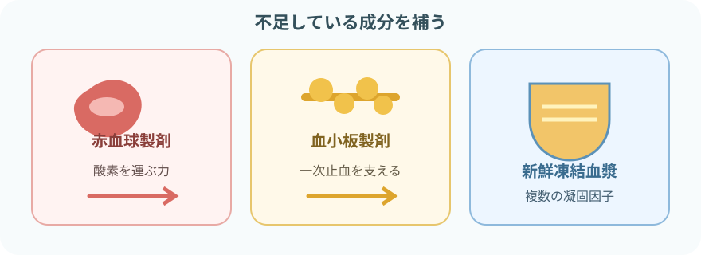
- 赤血球製剤：赤血球を補い、酸素運搬能を改善する
- 血小板製剤：血小板を補い、一次止血を支える
- 新鮮凍結血漿（FFP）：複数の凝固因子を補う
- アルブミン製剤：血漿分画製剤。輸血用血液製剤とは管理・適応が異なる
輸血は補充療法。原因治療の代わりにはならない。製剤の種類、単位数、容量は製品ごとに異なるため、製品表示と指示で確認する。
輸血前の検査と準備
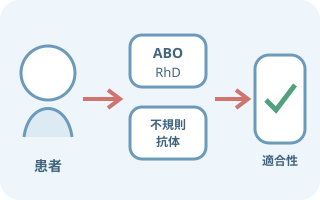
検査名より、どの安全を確かめるか
- ABO・RhD血液型：患者の血液型を確認する
- 不規則抗体検査：臨床的に重要な赤血球抗体を調べる
- 交差適合試験：患者血液と赤血球製剤の適合性を確認する
- T&S・コンピュータクロスマッチ：条件を満たす場合に用いる準備・照合方法
- 検体採取時から患者を確実に識別し、採血後にベッドサイドで表示する
- 輸血歴、妊娠歴、既往抗体、過去の副反応を確認する
- 検体の有効期間や再採血条件は患者歴と院内手順で変わる
- 血小板・FFPを含め、必要な検査と適合基準は製剤・状況で異なる
開始前の観察
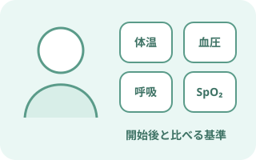
輸血前の基準をつくる
- 体温、血圧、脈拍、呼吸数、可能ならSpO₂
- 意識、顔色、呼吸音、呼吸困難、胸痛、悪寒、疼痛
- 発疹、掻痒、浮腫、頸静脈怒張、体重、尿量
- 静脈路の逆血・滴下、疼痛、腫脹、漏れ、固定
- 心不全、腎機能低下、体液過剰、重いアレルギーのリスク
すでに発熱、発疹、呼吸困難などがある場合は、開始後の変化と区別できるよう記録し、開始してよいか確認する。
必要物品
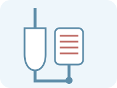
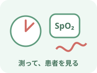
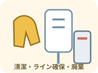
- 末梢静脈カテーテルのゲージを一律に決めない
- 患者の血管、製剤、必要速度、カテーテル・機器の性能から選ぶ
- 輸液セットを輸血セットの代用にしない
- 輸血用血液製剤は単独投与が原則。他薬剤と混注しない
照合はベッドサイドで閉じる
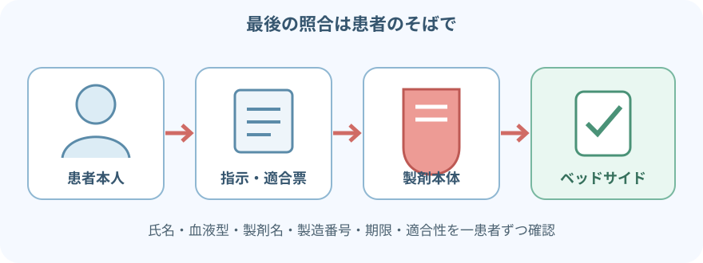
- 本人に氏名と生年月日などを名乗ってもらい、リストバンドと照合する
- 患者、指示、適合票、製剤本体、電子照合を一患者ずつ確認する
- 患者氏名、血液型、製剤名、製造番号、有効期限、適合試験結果、照射表示などを確認する
- 複数名確認と電子照合は、院内手順どおり実施する
- 確認後に患者・製剤から離れた場合は、接続前に再照合する
輸血の手順
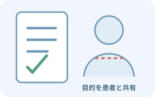
指示・同意・体制を確認目的、製剤、単位数、速度、検査、同意、過去の副反応、連絡方法を確認。緊急時は救命を優先する運用がある。
- 製剤を受け取り、外観と表示を確認
保管・搬送状態、破損、漏れ、変色、凝固、著しい凝集、期限を確認。異常があれば使用しない。
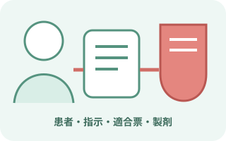
ベッドサイドで患者と製剤を照合一患者ずつ、複数名または電子照合を用いて、患者・指示・適合票・製剤本体を確認。
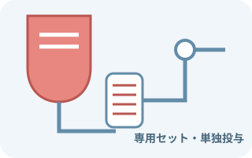
輸血セットを接続接続部を清潔に扱い、指定された方法でプライミング。患者側ルートの開通と刺入部を確認する。
- 最初の5分間はベッドサイドを離れない
ゆっくり開始し、患者の訴え、意識、皮膚、呼吸、脈拍、血圧を観察。急性反応を疑えば直ちに止める。
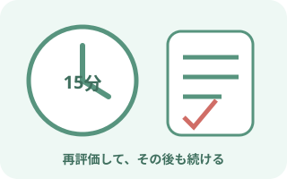
15分頃に再評価し、その後も継続バイタル、症状、刺入部、滴下、残量を確認。速度変更は患者状態と指示を再確認して行う。
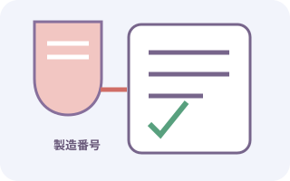
終了後も観察し、記録患者、製剤、製造番号、終了時刻、投与量、バイタル、症状を確認。遅れて出る副反応も説明する。
- 日本赤十字社は、一般成人の例として開始10～15分を約1mL/分、その後を約5mL/分としている
- 心不全、腎機能低下、高齢、小児、急速輸血などへ一律に当てはめない
- 滴下数への換算は輸血セットの滴数、ポンプ、製剤、指示で変わる
- 時間だけを優先せず、患者の耐容性と製剤の使用条件を確認する
観察の時間軸
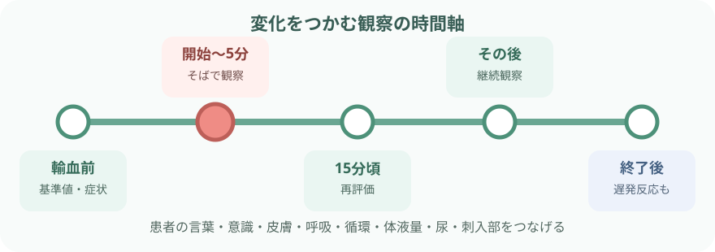
- 輸血前：副反応と区別するための基準値と症状を記録
- 開始～5分：ベッドサイドを離れず、急性溶血、アナフィラキシー、細菌感染などを警戒
- 15分頃：患者のそばでバイタルと全身状態を再評価し、速度・刺入部・製剤を確認
- その後：院内間隔で継続観察。患者に知らせてほしい症状を伝える
- 終了後：終了時だけでなく、TRALI、TACO、感染、遅発性反応を意識して経過を見る
症状から考える副反応
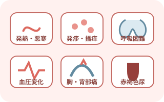
一つの症状を一つの原因に決めない
- 発熱・悪寒：発熱性非溶血性反応、溶血、細菌感染など
- 蕁麻疹・掻痒：アレルギー反応。呼吸・循環変化を同時確認
- 呼吸困難・SpO₂低下：TRALI、TACO、アナフィラキシーなど
- 血圧低下・疼痛・赤褐色尿：急性溶血などを含む重篤反応
- 高熱・戦慄・ショック：細菌汚染を含めて緊急対応
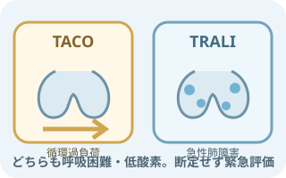
TACOとTRALIを呼吸困難だけで決めない
- TACO：循環過負荷。高血圧、頸静脈怒張、浮腫、体液過剰などが手がかり
- TRALI：輸血関連急性肺障害。低酸素と肺水腫像を生じ、発熱・低血圧を伴うことがある
- 心不全歴、輸液量、体重、尿量、聴診、画像、検査を合わせる
- ベッドサイドで断定せず、輸血を止めて緊急評価する
副反応を疑ったときの初動
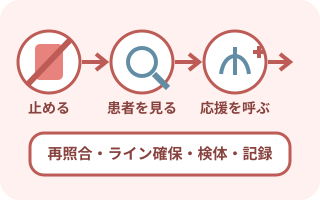
止める → 見る → 呼ぶ → 確かめる
- 輸血を直ちに中止し、自己判断で再開しない
- 患者の意識・気道・呼吸・循環、バイタル、症状を評価
- 応援を呼び、医師と輸血部門へ連絡
- 患者、指示、製剤、製造番号、適合票を再照合
- 静脈路は院内手順に従い、新しいセットで生理食塩液などへ切り替える
- バッグと輸血セットを捨てず、検体採取・返却・培養などの指示を確認
- 症状、時刻、投与量、対応、報告先、患者経過を記録
終了後・遅れて出る変化
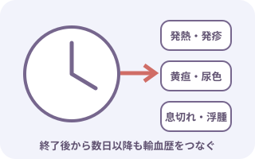
バッグが空になっても観察は終わらない
- 発熱、悪寒、発疹、息切れ、浮腫、体重増加
- 黄疸、褐色尿、尿量低下、貧血症状の再出現
- 出血の持続、期待した検査値・症状改善が得られない
- 退院後に症状が出たときの連絡先と、輸血を受けたことの伝え方
遅発性溶血、同種抗体、感染症、輸血後GVHDなど、発症時期が異なる有害事象がある。症状と輸血歴を結びつけて共有する。
報告・記録
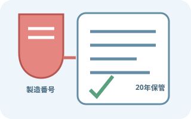
患者の経過と製剤を追跡できる形にする
- 目的、製剤名、血液型、製造番号、単位数・投与量
- 開始・終了時刻、速度変更、使用ルートと機器
- 輸血前、5分、15分頃、継続中、終了後のバイタルと症状
- 副反応の有無、発症時刻、残量、対応、医師・輸血部門への報告
- 患者説明、効果判定、退院後の連絡事項
特定生物由来製品の患者氏名・住所、製品名・製造番号、投与日などの記録は、少なくとも使用日から20年を下回らない期間の保管が必要。施設の輸血管理記録へ確実に残す。